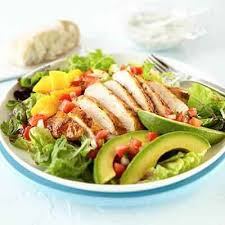

Chavma recipe

Description
This is the chicken, mango and avocado recipe that has juicy chicken,
creamy avocado and sweet mango flavor. It is a very colorful and
tasty dish with a lime dressing.
Ingredients
- 2 tablespoons brown sugar
- 1/4 cup water
- 1/3 cup lime juice
- 1/4 cup chili garlic sauce
- 4 cups shredded, cooked chicken
- 2 medium mangos - peeled, seeded and diced
- 2 avocados - peeled, pitted and diced
- 1 (10 ounce) package spring lettuce mix
Steps
- In a saucepan over medium-high heat, stir together the brown sugar
and water. Bring to a boil, then pour into a medium bowl. Stir in the
garlic chili sauce and lime juice. Set the dressing aside.
- In a large bowl, toss together the chicken, mangos and avocados. Arrange
the spring salad mix on serving plates, then top with a few spoonfuls of
the chicken mixture. Pour dressing over the top.